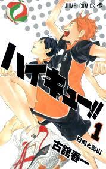
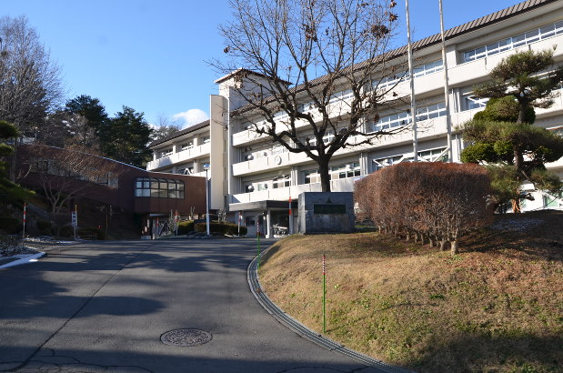
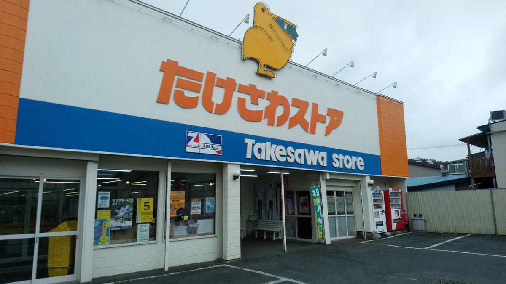
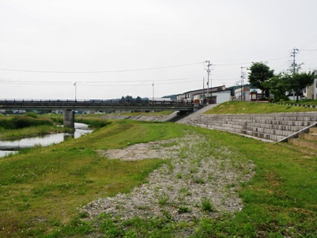
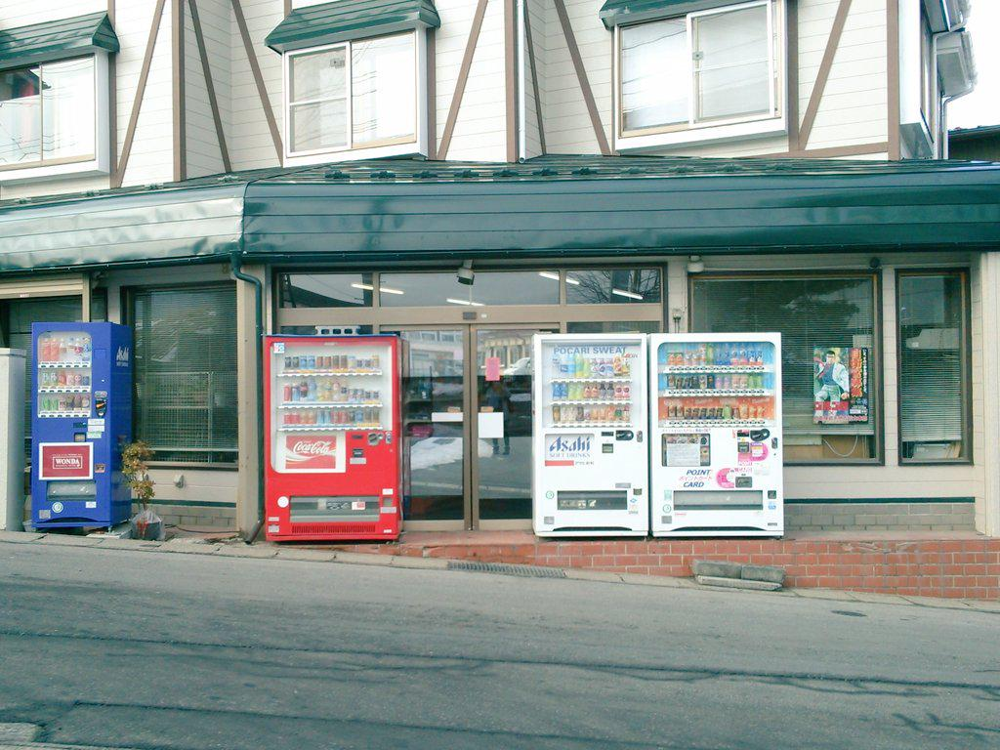
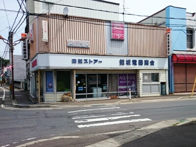
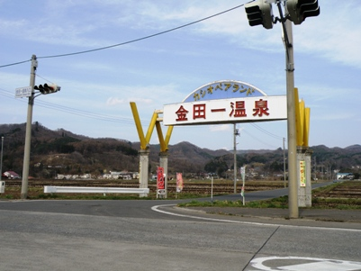

|
『ハイキュー!!』は日向翔陽と影山飛雄の2人の主人公を中心とした 烏野高校バレーボール部が全国大会を目指し、強豪校に挑みながら成長していく物語です。 高校バレーボールを題材にした日本の漫画作品で、 現実世界でありそうな試合展開や日常が描かれていることが評価されています。 |
 |
『少年ジャンプNEXT!』・『週刊少年ジャンプ』にそれぞれ読切版が掲載された後、
『週刊少年ジャンプ』にて2012年12号から2020年33・34合併号まで連載されました。
2022年8月時点でコミックス累計発行部数は5500万部を突破しています。
本作品のおもな舞台は宮城県となっており、仙台駅や仙台市体育館など宮城の地名・建物が
登場します。また、烏野高校とその周辺は作者である古舘春一さんの地元・岩手県の風景を
モデルにして描かれています。今回は『ハイキュー！！』の聖地となっている場所をいくつか
紹介したいと思います。
| 岩手県立軽米高等学校は、主人公の日向や影山たちが通う宮城県立烏野高校のモデル地です。 作者が通っていた高校でもあり、古舘さんもここで3年間バレーボールに打ち込んでいました。 校門近くに体育館があり、日向たちの練習風景が思い出されます。 |  |
|  | たけさわストアは、烏野バレー部OB嶋田さんが務めている『しまだマート』のモデル地です。 店内にはリーズナブルで八戸漁港産の新鮮なお刺身や精肉が何でも揃っていて、 古舘先生直筆サインや、しまだマートのマスコットキャラもあるそうです。 そして店の裏は山口が嶋田さんにジャンプフローターサーブの特訓をしてもらった場所です。 自販機の場所や窓の位置なども正確に再現されています。 |
| 音駒高校の黒尾と研磨が幼い頃バレーボールの練習をしていたモデル地の河川敷です。 烏野高校とは因縁のあるライバル校、東京の音駒高校の選手である狐爪と黒尾の回想シーンで登場します。 周囲は人通りもあまり多くなくのんびりとした空気が流れ、 時間帯によっては軽米高校の生徒が下校しています。 |  |
|  | 兼田商店は、烏野高校バレー部OBで後にコーチを務める 烏養繋心がよく店番をしている坂ノ下商店のモデル地です。 作品中ではバレー部のみならず、烏野高校の生徒が下校時に立ち寄る憩いの場となっています。 商店は高校の校門を出てすぐのところに位置しており、立地も作品の世界とリンクしています。 |
| 舘坂電器商会は、全国大会で活躍する烏野高校バレー部の試合をディスプレイTVで流していた電気屋のモデル地です。 日向はここで「小さな巨人」に憧れ、バレーボールを始めました。 店先にディスプレイTVは設置されていませんが、店構えそのものは作品とほぼ同じ。 漫画では「三坂電器商会」、アニメでは「ユキガオカデンキ」という店名でした。 |  |
|  | 物語の舞台として作品に登場したわけではありませんが、金田一温泉は青葉城西高校のミドルブロッカー・金田一勇太郎の名前の由来となった場所です。 軽米行きのバスで気軽にアクセスできることから、軽米町で聖地巡礼した多くのファンが立ち寄るようになり、新たな聖地となりました。 また、｢おぼない旅館｣はファンの為にハイキューグッズを集め、作者のサイン入り色紙まであることから聖地巡礼のお宿として知られています。 |
↓岩手県軽米町